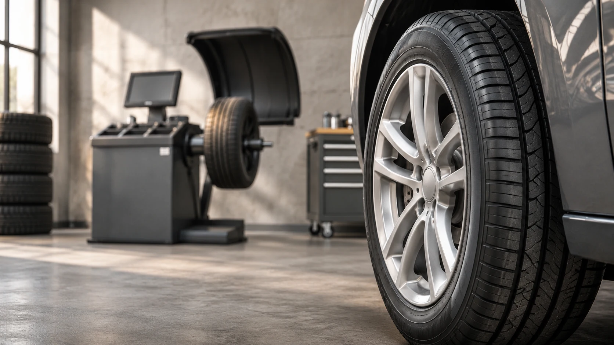

Седан — Шиномонтаж Комплекс съем/установка
- Комплекс съем/установка включает в себя: снятие и установка 4-х колес на автомобиль + протяжка динамометрическим ключом + проверка давления + технологическая мойка + упаковка колес
магазин дисков и шин
Шины и диски · Шиномонтаж · Хранение шин
Республика Татарстан, Казань, Тихорецкая улица, 19

Услуги
Выберите услугу — перейдём к способам записи.
- Комплекс съем/установка включает в себя: снятие и установка 4-х колес на автомобиль + протяжка динамометрическим ключом + проверка давления + технологическая мойка + упаковка колес
Комплекс Балансировка включает в себя: снятие и установка 4-х колес + балансировка + протяжка динамометрическим ключом + проверка давления+ технологическая мойка + очистка и обработка ступиц алюминиевой смазкой + упаковка колес
Сезонная смена колес включает в себя: снятие и установка 4-х колес + монтаж/демонтаж + балансировка + протяжка динамометрическим ключом + технологическая мойка + очистка и обработка ступиц алюминиевой смазкой + упаковка колес
Комплекс съем/установка включает в себя: снятие и установка 4-х колес на автомобиль + протяжка динамометрическим ключом + проверка давления + технологическая мойка + упаковка колес.
Выберите удобный способ в блоке ниже. Телефон компании: +79003269498
Республика Татарстан, Казань, Тихорецкая улица, 19
В блоке ниже можно посмотреть демонстрацию этой возможности. Для настоящего обращения свяжитесь с компанией и согласуйте время.
Следующий шаг
Свяжитесь с компанией, чтобы согласовать детали.
Шкала 10:00–20:00 показывает пример интерфейса, а не расписание или свободные места компании. Данные формы никуда не отправляются.
Сначала выберите услугу и день
Каждый отрезок — время начала. Полоса показывает длительность, если она опубликована компанией.
Выберите услугу, день и время
Демозапись подтверждена только на этой странице. Заявка не отправлена и время не забронировано. Для настоящей записи свяжитесь с компанией.
Республика Татарстан, Казань, Тихорецкая улица, 19
пн–вс: 09:00–18:00